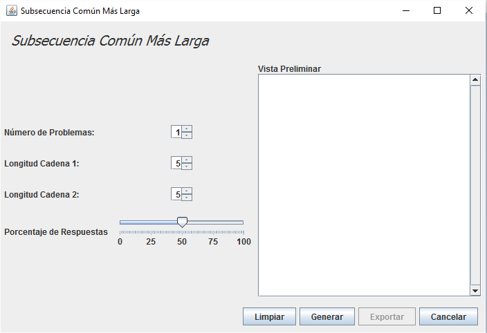

En esta página aparecerá toda la información acerca de la pantalla para generar el problema de la Subsecuencia Común Más Larga.
Para generar el problema deberemos establecer los parámetros pedidos por la herramienta. La pantalla aparecerá con valores por defecto que podrán ser modificados por el usuario en cualquier momento.
El último parámetro a añadir es el slider de porcentaje de resupuestas (ver imagen inferior), este Slider contendrá un valor entre 0 y 100 que hace referencia al número de respuestas proporcionadas, siendo 100, todas las respuestas del problema y dejando todo el problema resuelto, y 0, ninguna respuesta proporcionada y todo el problema lleno de incógnitas.
Una vez establecidos los parámetros deseados, pulsaremos el botón Generar para crear el problema del tipo Subsecuencia Común.
En el panel de al lado, de Vista Preliminar, aparecerán todos los problemas que se han generado, si se pulsa el botón limpiar reseteará todo el panel, aunque no perderá los problemas generados.
Si se pulsa el botón exportar, la aplicación llevará diretamente a la ventana Exportar.